Comprehension passage - the questions below it refer to this
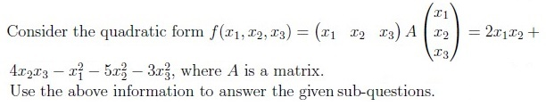
Q1MCQ2 marks
Which of the following options represents matrix A?
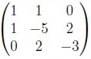
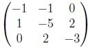
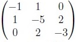
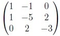
Q2MCQ2 marks
The matrix A is
positive definite.
negative definite.
Q3MSQ4 marksselect all that apply
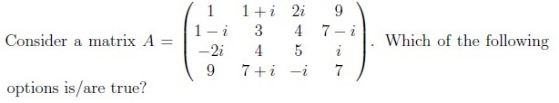
A is a Hermitian matrix.
A is digonalizable.
All eigenvalue of A real.
A has eigenvalues that are neither real nor purely imaginary.
Comprehension passage - the questions below it refer to this
Based on the above data, answer the given subquestions.
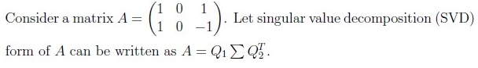
Q4MCQ2 marks
Which of the following options is true ?
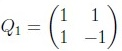
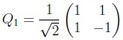
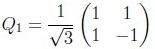
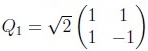
Q5MCQ2 marks
Which of the following options is true?
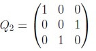
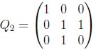
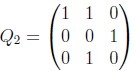
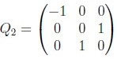
Q6MCQ1 mark
Which of the following options is true?
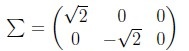
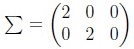
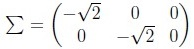
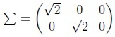
Q7MSQ4 marksselect all that apply
Which of the following options is/are true?
Any matrix of order n × m is similar to an upper triangular matrix.
If a matrix A is not symmetric, then ATA can not be a symmetric matrix.
If A is a positive definite matrix then A2 + I positive definite.
For any matrix A, ATA is orthogonally diagonalizable.
Q8MSQ4 marksselect all that apply
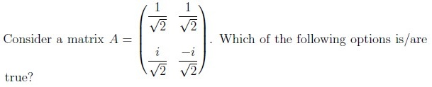
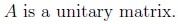
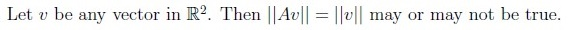
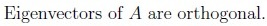
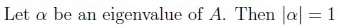
Q9MCQ2 marks
What is the primary goal of Principal Component Analysis (PCA)?
To find the directions that capture the maximum variance in the data.
To find directions that capture the minimum variance in the data.
To increase the dimensionality of the data.
To reduce the number of data points.
Comprehension passage - the questions below it refer to this
Based on the above data, answer the given subquestions.
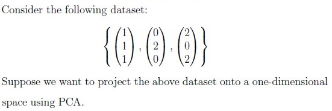
Q10MCQ3 marks
Compute the sample covariance matrix C for the given dataset.
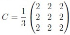
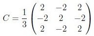
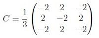
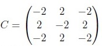
Q11MCQ3 marks
Which is the principal direction that is chosen for performing PCA?
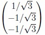
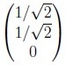
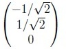
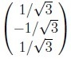
Q12MCQ3 marks
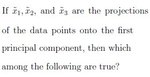
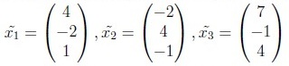
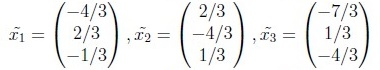
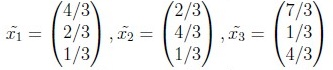
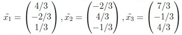
Q13MCQ2 marks
Which of the following statements about choosing the learning rate in gradient descent is incorrect?
A small learning rate can lead to slow convergence.
A large learning rate can cause the loss function to fluctuate around theminimum.
A large learning rate can cause divergence.
A small learning rate always causes the training to progress very quickly.
Q14SA3 marks
Consider a function f(x,y) = (x − 1)2 + (y − 2)2 . Using a gradient descent algorithm, with an initial guess of (0, 0) and learning rate of 0.1, what will be the absolute difference between the value of the function after first and second iteration? Enter the answer correct to three decimal places.
Q15SA3 marks
The value of a function at point 25 is 5. The values of the function’s first and second order derivatives at this point are 0.1 and -0.002 respectively. What will be the function’s approximate value at the point 25.1? (Enter the answer correct up to three decimal places).